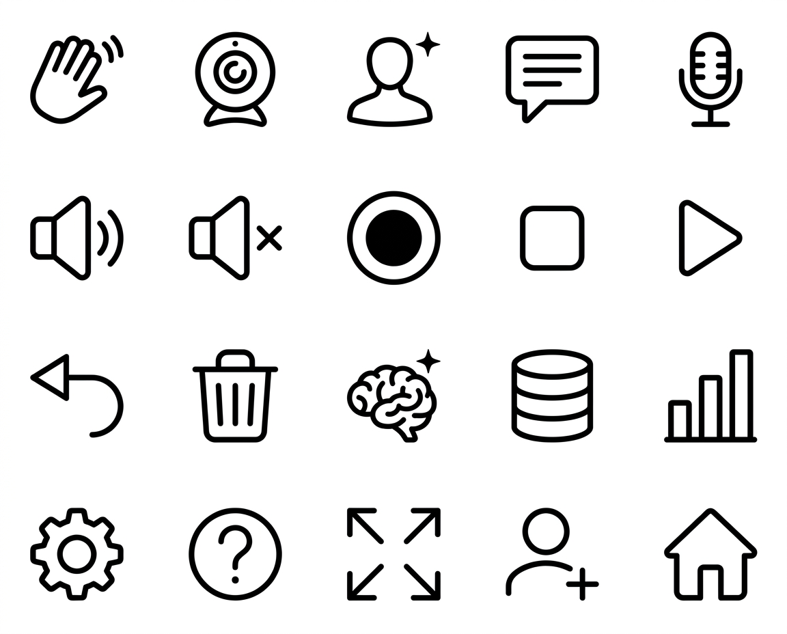
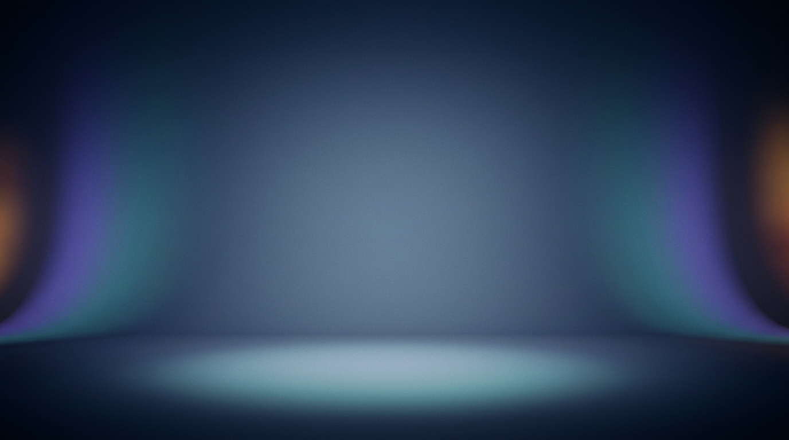
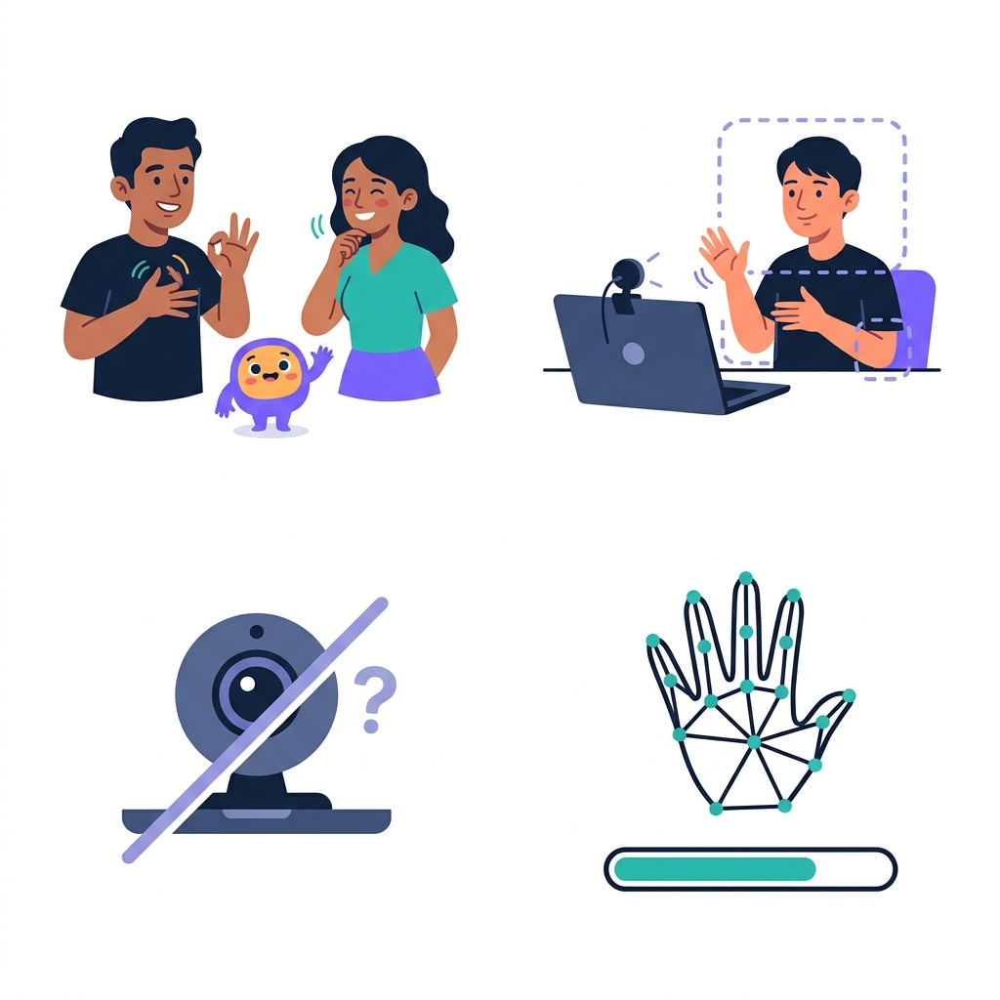

Una generación por imagen, sin reintentos. La API no informó el costo. Precio publicado: 0.04 USD por imagen a 1K, unos 0.20 USD en total.
Para qué es: Ícono de la ventana, pantalla de inicio y encabezado. Sin texto: el nombre lo escribe la app.
Lista de revisión: Una sola figura centrada sobre fondo blanco liso; mano con 5 dedos bien formados; sin texto.
Tamaño: pedido 1:1 a 1K, real 1024x1024 · tarea 087716daae9a4538bae00b1eafbad732

Para qué es: Hoja de 20 íconos en cuadrícula de 5 columnas × 4 filas. La app la corta en celdas iguales y pinta cada ícono del color que toque.
Lista de revisión: Exactamente 20 íconos en 5 columnas × 4 filas, alineados, todos negros de línea sobre blanco, en el orden pedido, sin texto.
Tamaño: pedido 5:4 a 1K, real 1152x928 · tarea 063d7d1123c9424f9720ee56a0f0027a

Para qué es: Escenario donde se ve el avatar 3D dentro de la app (el avatar se dibuja encima).
Lista de revisión: Fondo vacío, centro más claro, sin objetos ni personas ni texto.
Tamaño: pedido 16:9 a 1K, real 1376x768 · tarea a8ae850b991344d08ddad395471e2862
Para qué es: Pantalla de bienvenida. El tercio izquierdo queda oscuro para poner el nombre y los botones encima.
Lista de revisión: Tercio izquierdo oscuro y limpio; formas fluidas a la derecha; sin personas ni texto.
Tamaño: pedido 16:9 a 1K, real 1376x768 · tarea 48dd3a98dc04485698679f1d698bbe8f

Para qué es: 4 ilustraciones para pantallas de ayuda y estados vacíos, en cuadrícula 2 × 2 (la app las recorta).
Lista de revisión: 4 ilustraciones en 2 × 2, mismo estilo, fondo blanco, manos con 5 dedos, sin texto.
Tamaño: pedido 1:1 a 1K, real 1024x1024 · tarea a0851574457f4e69bdc5c49217a44a2f